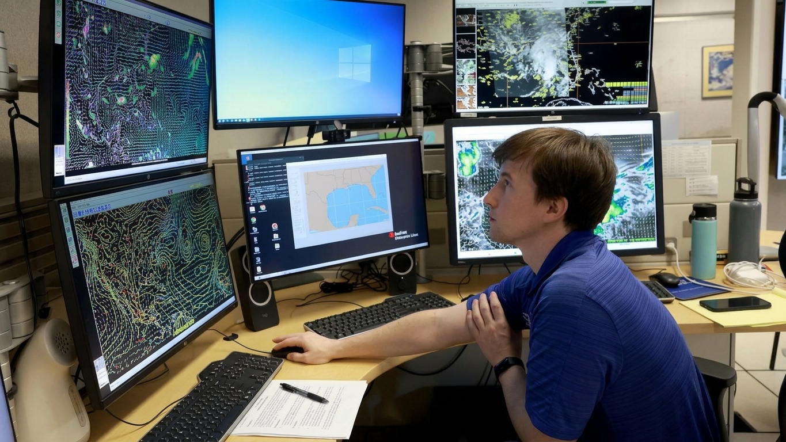

If you tried checking local storm tracks on weather.gov or radar.weather.gov on Friday, November 13, 2026, you likely encountered blank screens, slow-loading pages, or frozen radar loops. As winter storms and heavy rain pushed across parts of the United States, searches for "National Weather Service outage" and "NWS radar down" spiked nationwide.
Outage Key Facts
| Detail | Information |
|---|---|
| Date | Friday, November 13, 2026 |
| Impacted Services | Public websites (weather.gov, radar.weather.gov) |
| Root Cause | Nationwide internet & telecom routing issues |
| Radar Hardware | Fully operational (No physical outage) |
| Alerts Status | Active (Issued via internal networks) |
| Related Event | FAA Ground Stop (Same afternoon) |
What Happened During the November 13, 2026 NWS Outage?
In an official public notice issued on Friday, November 13, 2026, the National Weather Service confirmed that nationwide internet and communications issues were interfering with public access to its online portals:
"Nationwide internet and communications problems may prevent users from accessing products on NWS websites or cause outdated information to be displayed. Technicians are working to resolve the problems as soon as possible."
"Website Outage" vs. "Radar Outage"
Because public radar loops on radar.weather.gov stopped updating or failed to load for many visitors, rumors quickly spread online claiming that the nation's weather radar network had collapsed.
Later that evening, NWS officials clarified the technical distinction:
- The radars themselves were working: The nationwide network of WSR-88D Doppler radar towers continued scanning the atmosphere normally (aside from routine, pre-scheduled maintenance on isolated individual sites).
- The public web pipeline stalled: The bottleneck occurred in the internet and telecommunications infrastructure delivering web pages and cached graphical products to public browsers.
Were Severe Weather Warnings Still Going Out?
Yes. Even while weather.gov portals struggled to load, internal NWS forecasting systems remained active.
According to regional NWS offices—including offices in Los Angeles and Oklahoma City—meteorologists continued analyzing live radar data internally and issuing:
- Tornado Warnings and Severe Thunderstorm Warnings
- Flash Flood Warnings and Advisories
- Winter Storm Warnings and Wind Advisories
- Aviation and Marine Forecasts
Because NWS alerts are distributed across multiple redundant dissemination networks—not just a single public website—many outside weather apps, local TV meteorologists, and emergency alert systems continued receiving and broadcasting warnings even while weather.gov pages lagged.
Why Public Weather Maps Freeze During Telecom Outages
Understanding how weather data travels from a radar dish to your phone explains why a website can freeze while meteorologists still see live storms:
- Data Collection (Radar Site): A Doppler radar tower scans precipitation and wind speeds every few minutes.
- Internal Forecast Network: That raw data feeds directly into local NWS Weather Forecast Offices (WFOs) over dedicated internal government circuits so forecasters can issue life-saving warnings.
- Public Web Distribution: Separately, web servers package those radar sweeps into map tiles and web pages for millions of public visitors on
radar.weather.gov. When external internet routing or telecom gateways experience congestion or failure, step 3 stalls even though steps 1 and 2 continue operating normally.
5 Reliable Ways to Get Weather Alerts When weather.gov Is Down
You should never rely on a single website during active severe weather. If weather.gov or radar.weather.gov ever fails to load, use these backup channels recommended by NWS offices:
| Backup Channel | How It Works | Requires Home Internet? |
|---|---|---|
| NOAA Weather Radio (NWR) | Broadcasts 24/7 continuous warnings directly from local NWS offices on dedicated VHF radio frequencies. | No (works on battery/hand-crank radios during power & internet outages). |
| Wireless Emergency Alerts (WEA) | Sends automatic, loud push alerts directly to cell phones via cellular towers for Tornado, Flash Flood, and Tsunami warnings. | No (uses cellular broadcast infrastructure). |
| Official Local NWS Social Media | Regional NWS offices (e.g., @NWSLosAngeles, @NWSNorman) post manual radar screenshots and warning text directly on X and Facebook. |
Yes |
| Local Broadcast TV & Radio | Local television meteorologists receive direct feeds via the NOAA Weather Wire Service and satellite links. | No (accessible via over-the-air antenna or car radio). |
| Third-Party Radar Apps | Apps that pull raw Level II/III radar feeds directly from private data aggregators often bypass weather.gov web server bottlenecks. |
Yes |
Quick Summary
- What happened: On November 13, 2026, nationwide internet and communications problems caused National Weather Service websites to fail to load or display outdated forecasts and frozen radar maps.
- Radars stayed online: The NWS confirmed there was no physical radar network outage; Doppler radars continued operating, and local offices never stopped issuing watches and warnings.
- Best backup: Keep a battery-powered NOAA Weather Radio and ensure Wireless Emergency Alerts are enabled on your smartphone so you receive warnings even if websites go down.
Frequently Asked Questions (FAQs)
1. Did the National Weather Service Doppler radars break during the November 13, 2026 outage?
2. Why did radar.weather.gov look frozen?
3. Can I still get tornado or flood warnings if weather.gov is down?
4. Where do NWS offices post updates when their website goes offline?
5. Was the NWS outage connected to the November 13 FAA ground stop?
Conclusion
When weather.gov goes down during active weather, it is easy to assume the entire forecasting network has gone dark. In reality, the November 13, 2026 National Weather Service outage was a web and communications bottleneck rather than a radar failure—meaning meteorologists kept tracking storms and issuing warnings without interruption. Building redundancy into how you receive weather alerts, such as keeping a NOAA Weather Radio at home and following your local NWS office on social media, ensures you never miss a critical warning when internet portals slow down.
This article reflects reporting available on November 13, 2026. The NWS official clarification distinguishing web/telecom issues from actual Doppler radar hardware is reflected in this article.